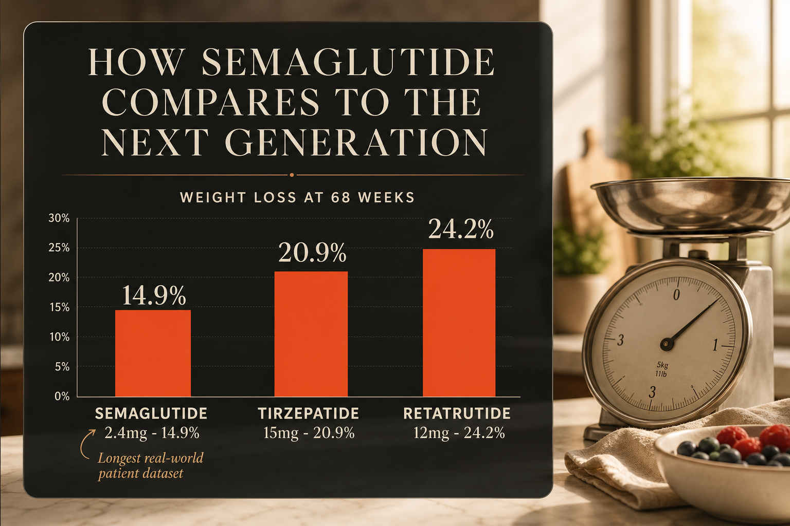

What Semaglutide Is
Semaglutide is a synthetic GLP-1 receptor agonist developed by Novo Nordisk. GLP-1 is a hormone naturally released by the gut after eating - it signals the brain that you are full, slows gastric emptying, and stimulates insulin secretion. Semaglutide mimics this hormone with a half-life of approximately one week rather than minutes, enabling once-weekly injection.
It is sold under four brand names: Ozempic (weekly injection, up to 2mg, for type 2 diabetes), Wegovy (weekly injection, up to 2.4mg, for weight management), Rybelsus (oral tablet, for type 2 diabetes), and the Wegovy 25mg oral pill approved December 2025. A Wegovy HD 7.2mg dose was approved in March 2026 for patients who have tolerated 2.4mg and still need more weight reduction.
Semaglutide has more long-term real-world safety and efficacy data than any other GLP-1 compound. The STEP 1 trial showed average weight loss of 14.9% over 68 weeks. The SELECT trial demonstrated 20% reduction in major cardiac events. Additional indications added in 2025 and 2026 for MASH liver disease and CKD progression.
Plain English Version
The First Remote Control - Single Button
Before universal remotes existed, every TV had its own simple remote with one job: change the channel. Compared to getting up every time, it was revolutionary.
Semaglutide is the single-button remote for your metabolic system. It targets one receptor - GLP-1. That one receptor controls hunger signals, gastric emptying speed, and insulin timing. When semaglutide activates it, your brain hears less hunger noise, your stomach moves food more slowly so you feel full longer, and your pancreas releases insulin at better times.
For most people coming from no management tool at all, that single button changes a lot. The 14.9% average weight loss in trials is meaningful - for a 200-pound person that is nearly 30 pounds. The fact that tirzepatide and retatrutide do more does not diminish what semaglutide achieves. It proved this category of treatment was real and remains the most prescribed and documented tool in the space.
One sentence: Semaglutide is the original GLP-1 remote control - one receptor, well-understood, with more patient data behind it than any other compound in its class.
How To Picture It

How It Works
Semaglutide binds to GLP-1 receptors in the brain, gut, and pancreas. In the hypothalamus it reduces appetite signals. In the stomach it slows gastric emptying. In the pancreas it stimulates glucose-dependent insulin secretion and reduces glucagon. The 7-day half-life is achieved through albumin binding.
Documented Benefits
approved for type 2 diabetes
SELECT trial
first-week commonly reported effect
2025 indication
2026 indication
Dosing Protocol
| Phase | Dose | Frequency | Notes |
|---|---|---|---|
| Starting | 0.25mg | Weekly | Tolerance only - not therapeutic |
| Step 2 | 0.5mg | Weekly | After 4 weeks |
| Step 3 | 1mg | Weekly | After 4 more weeks |
| Step 4 | 1.7mg | Weekly | After 4 more weeks |
| Maintenance | 2.4mg | Weekly | Standard Wegovy |
| Extended | 7.2mg | Weekly | Wegovy HD - after 4 weeks at 2.4mg |
Reconstitution Standard
Research-grade: SM10 (10mg vial) + 2ml BAC water = 5mg/ml
| Dose | Units | Volume |
|---|---|---|
| 0.25mg | 5u | 0.05ml |
| 0.5mg | 10u | 0.1ml |
| 1mg | 20u | 0.2ml |
| 2.4mg | 48u | 0.48ml |
Dosage Build-Up Timeline
- Week 1-4: 0.25mg - tolerance only
- Week 5-8: 0.5mg - first therapeutic level
- Week 9-12: 1mg - meaningful appetite reduction
- Week 13-16: 1.7mg - approaching full range
- Week 17+: 2.4mg - standard maintenance
Common Mistakes
3-4x higher nausea dropout with aggressive increases
muscle loss without deliberate tracking
two-thirds regain within one year
Contraindications And Cautions
monitor
hypoglycemia risk
What To Track
- Body weight weekly
- Waist circumference monthly
- Fasting glucose and HbA1c
- Protein intake daily
- Nausea and GI symptoms
- Energy and mood weekly
Stacks Well With
- KLOW - tissue repair, unrelated mechanism
- NAD+ - cellular energy support
- MOTS-c - insulin sensitivity via separate AMPK pathway
Sources
- FDA Wegovy prescribing info 2025. accessdata.fda.gov
- STEP 1 Trial. Wilding et al. NEJM 2021. PMID 33567185. nejm.org
- SELECT Trial. Lincoff et al. NEJM 2023. PMID 37952131. nejm.org
- Semaglutide Dosing Guide 2026. peptidedeck.com
- Heally Dosing Guidelines June 2026. getheally.com
For educational and research documentation purposes only. Not medical advice. Always speak with a qualified healthcare professional before making health decisions.